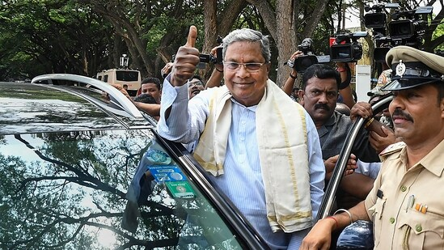

Karnataka CM Bommai concedes defeat in election: ‘BJP not able to make mark’

Conceding defeat in the Karnataka assembly election, chief minister Basavaraj Bommai on Saturday said the
Bharatiya
Janata Party has not been able to make the mark, while the Congress did it successfully.
Bommai's reaction comes even as the Congress was striding forward with leads in 128 seats, while the BJP was
ahead in
66 in Karnataka, according to Election Commission of India trends, as votes were counted on Saturday for an
election
widely seen as a litmus test for both parties ahead of the 2024 Lok Sabha elections.
“We have not been able to make the mark. The Congress has done it successfully… Once the results come we will
do a
detailed analysis. As a national party, we will not only analyse but also see what deficiencies and gaps
were left
at various levels. We take this result in our stride,” the Karnataka chief minister told reporters.
Karnataka election: DK Shivakumar gets emotional as he recalls Sonia Gandhi's jail meeting

DK Shivakumar, overjoyed by the Congress's performance in the Karnataka assembly election 2023, on Saturday
got
emotional while recalling senior leader Sonia Gandhi's visit to Delhi's Tihar jail to meet him in 2020 when
he was
arrested by the Enforcement Directorate in connection with a money laundering case.
“I assured Sonia Gandhi, Rahul Gandhi, Priyanka Gandhi and Mallikarjun Kharge that I will deliver Karnataka.
I can't
forget Sonia Gandhi coming to meet me in jail,” Shivakumar told reporters as -the Congress was set to win
the
Karnataka
assembly elections on Saturday, defeating the ruling Bharatiya Janata Party (BJP), a big boost ahead of Lok
Sabha
elections due next year.
Shivakumar, who is a top contender for the chief minister's post, said, “The Congress office is our temple.
We will
decide our next step at the Congress office.”
Siddaramaiah's PM hope for Rahul Gandhi in 2024 after Karnataka mandate

Congress leader Siddaramaiah on Saturday hoped that Rahul Gandhi becomes the prime minister of the country in
the
2024
Lok Sabha elections after Basavaraj Bommai conceded defeat in the Karnataka Assembly Election 2023. "It is a
mandate
against Narendra Modi, Amit Shah and JP Nadda. PM Modi came to Karnataka 20 times. No PM in the past
campaigned
like
this," Siddaramaiah who is a top contender for the CM post said.
"This is a victory for a secular party!! People of Karnataka wanted a stable government that delivers as
promised, and hence have given the mandate for Congress!!" Siddaramaiah tweeted.
Talking about the ramifications of the Karnataka results coming after a bitterly fought battle, Siddaramaiah
said
this is a stepping stone to the Lok Sabha election. "I hope all non-BJP parties come together and see that
BJP is
defeated and I also hope Rahul Gandhi may become the PM of the country," Siddaramaiah said.
Karnataka election results: 'I delivered…': DK Shivakumar's emotional message for party after
Cong's
big
win

'I delivered...' - an emotional Karnataka Congress chief DK Shivakumar's message to his party Saturday
morning
shortly
after the ruling Bharatiya Janata Party conceded defeat in the 2023 Karnataka Assembly election. "I assured
Sonia
Gandhiji, Rahul Gandhiji and Priyanka Gandhiji, and (Congress boss) Mallikarjun Khargeji I will deliver
Karnataka to
the
fold..." he said.
The Congress on Saturday scripted a remarkable win in Karnataka - a state that has voted out the incumbent
government
in
every election since 1985 - with leads in over 126 seats and wins in 10 as of 2 pm.
A BJP confident of retaining power after a high-wattage campaign featuring prime minister Narendra Modi,
union
home
minister Amit Shah and Uttar Pradesh chief minister Yogi Adityanath fell apart after taking an early lead.
UP municipal election results 2023 LIVE: BJP sweeps mayor races, close elsewhere

The high-voltage Uttar Pradesh urban local body (ULB) elections will end today with the declaration of
results
for
mayors and corporators in 17 municipal corporations, and for chairpersons and members of nagar palika
parishads
as
well
as nagar panchayats. According to the initial trends, the ruling Bharatiya Janata Party (BJP) in the state
is
looking
well on course to continue its dominance in municipal corporations, while the opposition Samajwadi Party is
giving a
tough fight in municipal councils and nagar panchayats.
An exit poll projection by News18 suggests that the BJP is winning in at least 10 municipal corporations,
while
Akhilesh
Yadav's SP and Mayawati's BSP are set to take at least one nagar nigam each. It is believed that there will
be a
close
contest on five seats, according to the exit poll.
Uttar Pradesh, being the state with the maximum representation of 80 Members of Parliament in the Lok Sabha,
holds
strategic importance in national politics.
Army's ‘eye in the sky’ with UAVs, helicopters to monitor Manipur violence

The Indian Army has deployed unmanned aerial vehicles (UAVs) and helicopters to keep an eye on sensitive
areas
across
Manipur as authorities work to restore normalcy in the violence-hit state.
Indian Army's Spear Corps on Friday shared about the ongoing efforts and about the deployment of UAVs and
helicopters
for Aerial Surveillance.
"Approximately 130 columns on the ground, UAVs and helicopters for Aerial Surveillance working relentlessly
to
restore
normalcy. The escorted move of the remaining approx 6000 persons is underway. Round-the-clock aerial
surveillance
continues," Indian Army said in a tweet while sharing a video captured through a UAV during aerial
surveillance.
AIIMS INI CET 2023 result expected to release today at aiimsexams.ac.in

All India Institute of Medical Sciences (AIIMS) is expected to announce the Institute of National Important
Common
Entrance Test (INI CET) result 2023 of July session today, May 13. Candidates who appeared for the AIIMS INI
CET
July
Exams can check their results on the official websites at aiimsexams.ac.in.
The AIIMS INI CET 2023 examination was held on May 7, 2023, for admissions into MS, MD, DM, MDS, and MCh
courses.
AIIMS INI CET result 2023 will be made available on the official website of AIIMS exams at aiimsexams.ac.in.
World Migratory Bird Day: Avian love under summer skies

From Indian Pitta to Black-tailed Godwit, birders in city have been spotting different winged beauties. Some
Delhiites
even share their arduous process of capturing these birds as they stay busy in nesting to stay here for the
rest
of
the
summer season.
In the scorching summer month of May when one hears the sweet songs of birds that have flown from far-off
lands,
it’s
difficult to keep calm. These feathered friends are back, and Delhiites are elated to spot them in the
skyline.
On
Wold
Migratory Bird Day (May 13), hear the chirpiness among birders on spotting these winged beauties!
From the vibrant Indian Pitta to the elegant Black-tailed Godwit, the winged discoveries are making quite a
splash on
many social media feeds. “Summer is the time when birds often visit the Capital to breed as it is the apt
environment
for it,” shares Kanwar Bir Singh, creator of Indian Birds, a Facebook bird-watching community.
G7's new vaccine program for developing nations to 'prepare for next pandemic'
Union Health Minister Mansukh Mandaviya in a group picture with his The Group of Seven health ministers
counterparts
during the inaugural session of the G7 Health Ministers' Meeting, in Nagasaki on Saturday.
The Group of Seven (G7) rich nations is set to agree on establishing a new program to distribute vaccines to
developing
countries at next week's summit of leaders, Japan's Yomiuri newspaper said on Saturday.
In addition to the G7, G20 nations such as India and international groups such as the World Health
Organization
(WHO)
and the World Bank will participate, it added, citing Japanese government sources.
Israel-Palestine rocket attack resumes as truce bid amid flare-up lingers

Egypt has been trying to mediate a truce to the flare-up, which has so far left at least 33 Palestinians and
one
Israeli
dead.
Palestinian militants in Gaza resumed rocket fire on Israel early on Saturday after Israeli aircraft bombed
Islamic
Jihad targets in the enclave overnight, as fighting entered a fifth day.
The violence extends more than a year of resurgent Israeli-Palestinian violence that has killed more than 140
Palestinians and at least 19 Israelis and foreigners since January.
Thousands evacuated in Bangladesh, Myanmar as Cyclone Mocha set to make landfall.

Cyclone mocha is also predicted to cut across an area in Bangladesh, home to the world’s largest refugee
camp,
which
contains about a million Rohingyas.
Bangladesh and Myanmar have warned hundreds of thousands of people to evacuate as Cyclone Mocha intensified
into
an
extremely severe cyclonic storm over east central Bay of Bengal. The system was 570 km north-northwest of
Port
Blair
and
730 km south-southwest of Cox's Bazar at 11:30 pm IST on Friday, according to the India Meteorological
Department
(IMD).
The World Meteorological Organization, a United Nations agency, has warned of heavy rain, flooding and
landslides
potentially affecting “hundreds of thousands of the world’s most vulnerable people” and six million people
in
need
of
humanitarian assistance in Myanmar’s Rakhine state.
Ex-Pak PM Imran Khan back in Lahore home after two days of detention

Imran Khan took a road route to reach his Lahore residence, marking his return after a tumultuous period.
Pakistan Tehreek-e-Insaf (PTI) Chairman Imran Khan returned to his residence in Lahore's Zaman Park in the
wee
hours
on
Saturday after two days of detention, reported Geo News.
He was greeted all the way to Lahore by PTI supporters. Imran took a road route to reach his Lahore
residence,
marking
his return after a tumultuous period.
Prince Harry talked to King Charles on night before coronation

Royal expert Nick Bullen said that Prince Harry still managed to have a chat with King Charles.
“My understanding is he didn’t have any interactions with the Prince or Princess of Wales but that he did
have a
conversation with his father the night before. Until the morning, nobody really knew what Harry’s plans were
going
to be
for that afternoon,” Nick Bullen said.
“I think everybody knew he had a plane to catch. Everybody knew he was intending to get home, but there was a
hope, I
think, that he might be part of some of the family celebrations back at the palace. So, I think that there
was a
sadness
that he wasn’t part of the fuller day, but, you know, they all knew he was gonna get on that plane,” the
royal
expert
claimed.
Elon Musk defends YouTuber MrBeast's charitable intentions amid a plethora of criticism

The CEO of Twitter and tech-billionaire Elon Musk has recently defended popular American YouTuber Jimmy
‘MrBeast’
Donaldson after criticism that his latest philanthropic video was "inspirational porn" and spreading
misinformation
about deafness.
In the recent YouTube video, MrBeast gifted modern hearing aids to 1,000 deaf people, which amassed almost 50
million
views in five days and while many praised the act of humanity and charity, others criticized it as a
simplistic
solution
to a complex issue.
However, deaf advocate Crystal Jones argued that Musk's sentiment was "dangerous" and that the conversation
should
instead focus on issues of accessibility and realistic expectations surrounding hearing aids in US
healthcare
system.
Northern California rumbles as magnitude 5.5 earthquake hits the state, authorities assess
potential
damage

A 5.5 magnitude earthquake hit Northern California on Thursday afternoon, causing shaking felt across the
northern
half
of the state, including the Pacific coast and parts of the Bay Area, as well as parts of Nevada.
A magnitude 5.5 earthquake struck near Lake Almanor in northern California, sending tremors across the region
and
as
far
south as Sacramento. The earthquake, which initially registered as a 5.7 magnitude but was later revised to
5.5
by
the
US Geological Survey (USGS), occurred around 4:19 p.m. on Thursday.
Following the initial earthquake, a series of aftershocks rattled the same region. The strongest aftershock
recorded
had
a magnitude of 3.0, according to the USGS.
SKY came and said 'no': Rohit Sharma reveals how Suryakumar Yadav thwarted MI's left-right
combination
plan

Initially, MI posted 218/5 in 20 overs, courtesy of an unbeaten century by Suryakumar. The India star
hammered
103*
off
49 balls, packed with 11 fours and six sixes, at a strike rate of 210.20. For GT's bowling department,
Rashid
took
four
wickets.
"That's the kind of confidence he brings and it rubs off on the guys who are batting with him. There's no
looking
back.
Good thing is every game he's wanting to start fresh. Which is nice for a cricketer to think like that.
Sometimes
you
can sit back and be very proud about it, but that's not the case with him," he further added.
It was also Suryakumar's maiden IPL century. Speaking after the match, MI captain Rohit Sharma lauded the
32-year-old
batter, and also revealed how he rejected his team's batting plans. "Honestly, it's just the confidence
Surya
has
got.
At the start of the tournament, we were debating if we need a left-right combination, Surya said no, 'I want
to
go
in',"
he said.
High humidity levels can raise the risk of heat-related illnesses in urban climates

Yale scientists' latest study published in Nature examines the impact of temperature and humidity on urban
heat
stress
using observations and a climate model.
Researchers found that the heat stress burden is dependent on local climate and a humidifying effect can
erase
the
cooling benefits that would come from trees and vegetation.
"In dry, temperate, and boreal climates, urban residents are actually less heat-stressed than rural
residents.
But in
the humid Global South, the urban heat island is dominant over the urban dry island, resulting in two to six
extra
dangerous heat stress days per summer."
Jammu and Kashmir hosts adventure activities to boost tourism ahead of G20 Summit

As a part of its preparation for the upcoming G20 summit, the Jammu and Kashmir government is launching new
initiatives
and attractions for tourists to enjoy.
The beautiful region of Jammu and Kashmir is already known for its stunning natural scenery and rich cultural
heritage,
but now the upcoming G20 summit is providing a unique opportunity to showcase the area's tourism potential
on
the
global
stage.
"We are continuously striving to create new and unique experiences for tourists visiting J&K. The hot air
balloon
ride
is one such experience that will add to the charm of Srinagar and attract more visitors," said Shah.
Man watches IPL match on phone while sitting in stadium.
Many people wish to watch IPL matches live in the stadium. However when one person had that chance, they
chose to
view
the match on their phones.
In a video shared by Twitter handle @bijjuu11 you can see a massive audience cheering and watching the match
in a
stadium. As the camera pans toward the backseat, a man can be seen viewing the game on his phone.
This clip was shared just two days ago. Since being posted, it has been viewed more than 11,000 times, and
the
numbers
are still increasing. The share also has several likes and comments. Many people thought that the video was
hilarious.
Bangalore South election 2023 results LIVE: Govindraj Nagar, Vijaynagara, Basavanagudi,
Padmanabhanagar,
BTM Layout

Bangalore South election 2023 results: A voter turnout of over 73% was recorded in the recently conducted
Karnataka
Assembly elections. Bangalore South constituency constitutes - Govindraj Nagar, Vijay Nagar, Chickpet,
Basavanagudi,
Padmanabha Nagar, B.T.M. Layout, Jayanagar, Bommanahalli seats.
V Somanna won the Govindraj Nagar seat in 2018 and Vijay Nagar seat went to Vijaynagara went to Anand Singh.
Chickpet's
sitting MLA is Uday B Garudachar and Ravisubramanya is the sitting MLA from Basavanagudi.
R Ashoka is the sitting MLA from Padmanabha Nagar. Ramalinga Reddy won B.T.M. Layout in 2018. Sowmya Reddy is
the
sitting MLA Jayanagar.
Bommanahalli's seat was won by M. Satish Reddy.